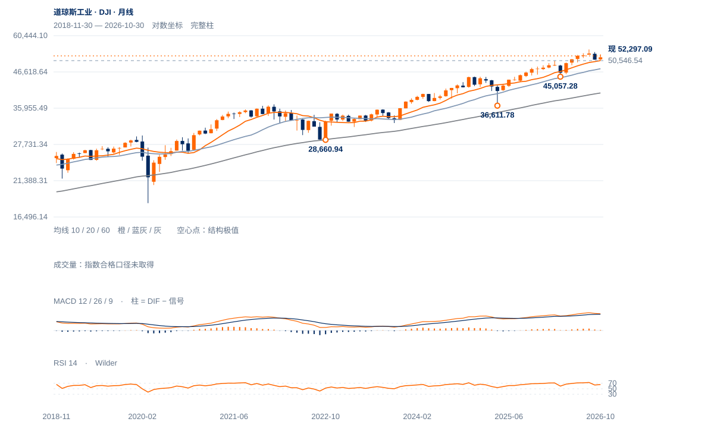

防守震荡
未来1—5日偏向防守震荡，53710原上沿未突破，先看近期回撤能否守住50992附近。
未来1—5日偏向防守震荡，53710原上沿未突破，先看近期回撤能否守住50992附近。
未来2—6周倾向50547—53710区间内防守修复。原53710两日过滤通过后，仍需观察54744大高及运输20831、21583的分层回收。
未来1—3个月偏向长期上升中的整理，50547附近守住则更有条件再次试高。工业连续两周收低50547且运输同步失守19382收盘谷，将显著削弱主要趋势；工业突破54744而运输仍滞后，则仅记分歧。

展开图表 ↗2022低28660.94、2025年4月36611.78、今年3月45057.28逐级上移，10月月收51770.31高于10/20月均衡50556.30/47700.76。当前52297仍处于长期上升结构内，较纳指的破谷损伤小；但距8月54744.33大高仍有差距，长期上行不等于眼下已经突破。
10月1日50546.54低点与完整10月均衡50556附近重合，构成防守区。运输指数近20日涨2.15%，但11月4日收盘峰20830.98尚未越过8月26日21583.06、更低于8月13日21928.05；工业与运输未形成同步新高，不能报告新的道氏上涨确认。运输指数19382.09是9月30日收盘谷，和盘中低点分别处理。
工业指数保留较高大谷，运输指数仍未越过8月较低收盘峰，新的同步上升确认尚缺。工业50547防守与运输20831—21583回收分层观察。
20日绝对涨幅仅0.23%，相对纳指比值升5.55%；两者不能合并写成强劲上涨。现收52297.09略高于20日52253.57及50日52000.64。
ER20为0.014，说明20日累计波动很大、净位移很小。11月5日高53710.61与6日低50992.61之间仍有明显双向空间，不适合以一次均线穿越判趋势。
12日盘中到52751.22，收52297.09，收盘位置仅5.4%、上影占振幅67.3%；尚未兑现前日较强收盘的向上跟进。
先日收保持52751.22之上；连续两日收过原53710.61，才完成原向上过滤。
日收跌回51977.08先削弱本次修复；原50992.61日收条件继续保留。
运输指数已从9月收盘谷形成较高低点并回到200日均衡附近，存在补涨条件；若20831上方保持并继续突破21583，当前未确认状态会改善。
| 周期 | 最后完整柱 | 图示柱数 | RSI14 | ATR14 | MACD柱 |
|---|---|---|---|---|---|
| 日线 | 2026-11-12 | 185 | 51.48582 | 689.1863 | 10.7627 |
| 周线 | 2026-11-06 | 156 | 48.48234 | 1299.74258 | -309.37128 |
| 月线 | 2026-10-30 | 96 | 65.48704 | 2478.72097 | 85.36251 |
美股价格拆股调整、不含分红再投资。完整周线至11月6日；11月进行中。指数成交量与全成分广度受限。